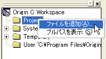

ファイルの添付と添付ファイルの取り出し
OPJファイルにファイルを添付したり、添付したファイルを見るには、コードビルダを使います。
OPJファイルにファイルを添付する
OPJファイルにファイルを添付するには
- 「標準」ツールバーの「コードビルダ」ボタン
 をクリックします。
をクリックします。
- ツリー形式のOrigin CワークスペースウィンドウにあるProjectサブフォルダを右クリックし、「ファイルを追加」メニューを選びます。
- 
- OPJファイルに添付したいファイルを選択します。( User や Tempのような他のフォルダからProjectフォルダにドラッグ&ドロップすることもできます。)
- Originプロジェクトファイルを保存する時、ProjectフォルダにあるすべてのファイルがOPJファイルに追加され、一緒に保存されます。Projectフォルダの内容は、OPJファイルと一緒に保存されますので、コードビルダ内のワークスペースを変更しても、このフォルダの内容は変更されません。
添付されたサードパーティ製のファイルを取り出す
添付されたファイルがあるOPJファイルを開く時、そのファイルは一時フォルダに展開され、そこに保存されます。
そのフォルダのパスを表示して、ファイルを開くには
- ツリー形式のOrigin CワークスペースウィンドウにあるProjectサブフォルダを右クリックし、「フルパスを表示」メニューを選びます。
- 添付されたファイルは、ファイル名をダブルクリックして開くことができます。
- 添付されたファイルがコードビルダで認識できるファイルの場合(Origin C および OGSファイルは特別な取り扱いがなされます。)、これらのファイルはコードビルダのMDI領域で新しいウィンドウとして開きます。
- 添付されたファイルがコードビルダで認識できないファイルの場合、OriginはファイルをWindowsに渡し、Windowsに関連付けされたアプリケーションがそのファイルを開きます。例えば、Microsoft Wordファイルが添付されていて、このファイルをダブルクリックする場合、そのファイルはMicrosoft Wordのアプリケーションによって開かれます。
別の方法として、Windowsエクスプローラを使って、一時サブフォルダに移動して、そのファイルをダブルクリックして開きます。プロジェクトを閉じると、このサブフォルダは、system.Windowsによって削除されます。
Origin CファイルおよびOGSファイルの添付における特別な取り扱い
Origin CファイルとOGSファイルの特別な取り扱いにより、作成したコードをOPJファイルに添付して、他のOriginユーザに簡単に配布できるカスタムアプリケーションを作成することができます。
プロジェクトファイルに添付されるOrigin Cファイルは、プロジェクトを開いたときに、コンパイルされ、ロードされます。Origin Cファイルで定義されているすべての関数が、プロジェクトを開いたときに、ユーザインターフェースを介して利用可能となります。
OGSファイルでは、プロジェクトを開いたときに、添付されたOPJファイルにあるスクリプトのセクションをユーザインターフェースを介して実行することができます。例えば、MyScripts.OGSというファイルを添付する場合、一度プロジェクトを開いたら、次のようなコマンドを使うだけで、スクリプトを実行することができます。
Run.section(MyScripts, MySection);
Originは、開いたOPJファイルにMyScripts.OGSというファイルがあるかどうかを探します。そして、そのOGSファイル内でMySectionというセクションを探します。見つかったら、そのセクションを実行します。添付されたファイルが見つからなければ、Originは、ユーザファイル領域を探し、最終的にOriginの実行ファイルのパスを探します。
OPJファイルを追加したときの添付されたサードパーティ製のファイルの取り扱いについて
Originのプロジェクトファイルを現在開いているプロジェクトに追加することができます。これは追加されるプロジェクトの内容を現在のプロジェクトファイルに追加するということです。プロジェクトを追加するとき、Originは添付されたファイルを次のように取り扱います。
- 同じ名前の添付ファイルが開いているプロジェクトに添付されていなければ、添付ファイルは開いているプロジェクトに添付されます。
- 同じ名前の添付ファイルが開いているプロジェクトに添付されている場合、ファイルの内容が比較されます。同一の内容だと見なされると2番目の添付ファイルは破棄されます。
- 添付されたファイルは同じで、ファイルの内容が異なる場合、2番目のファイルのファイル名が変更(例："TestData.txt"が"TestData1.txt"になる)されて、ファイルが添付されます。